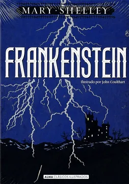

Formato: Libro físico
Autor: Mary Shelley
Editorial: Alma
Categoría: Literatura
Año: 2018
Idioma: Español
N°páginas: 256
Encuadernación: Tapa dura
Precio de venta: $8.930
DESCRIPCIÓN
La novela adopta una forma epistolar. Ubicada en la Europa del siglo XVIII y en plena efervescencia científica, el capitán de un barco ballenero escribe a su hermana Margaret sus vicisitudes y su encuentro con el físico Víctor Frankenstein, quien en busca del secreto de la vida y sin medir las consecuencias que esto le traerá, crea un nuevo ser con partes de otros seres humanos. El resultado es monstruoso y a partir de aquí se inicia una confrontación llevada hasta su extremo, un cuestionamiento filosófico y moral del hombre contra su creador que verá su fin hasta la trágica muerte de ambos. La historia inicia con una serie de cartas que el capitan Robert Walton envía a su hermana Margaret Saville en Inglaterra en donde le cuenta la situación sus venturas y desventuras en altamar y la conmovedora historia de su nuevo amigo y huesped Víctor Frankenstein.